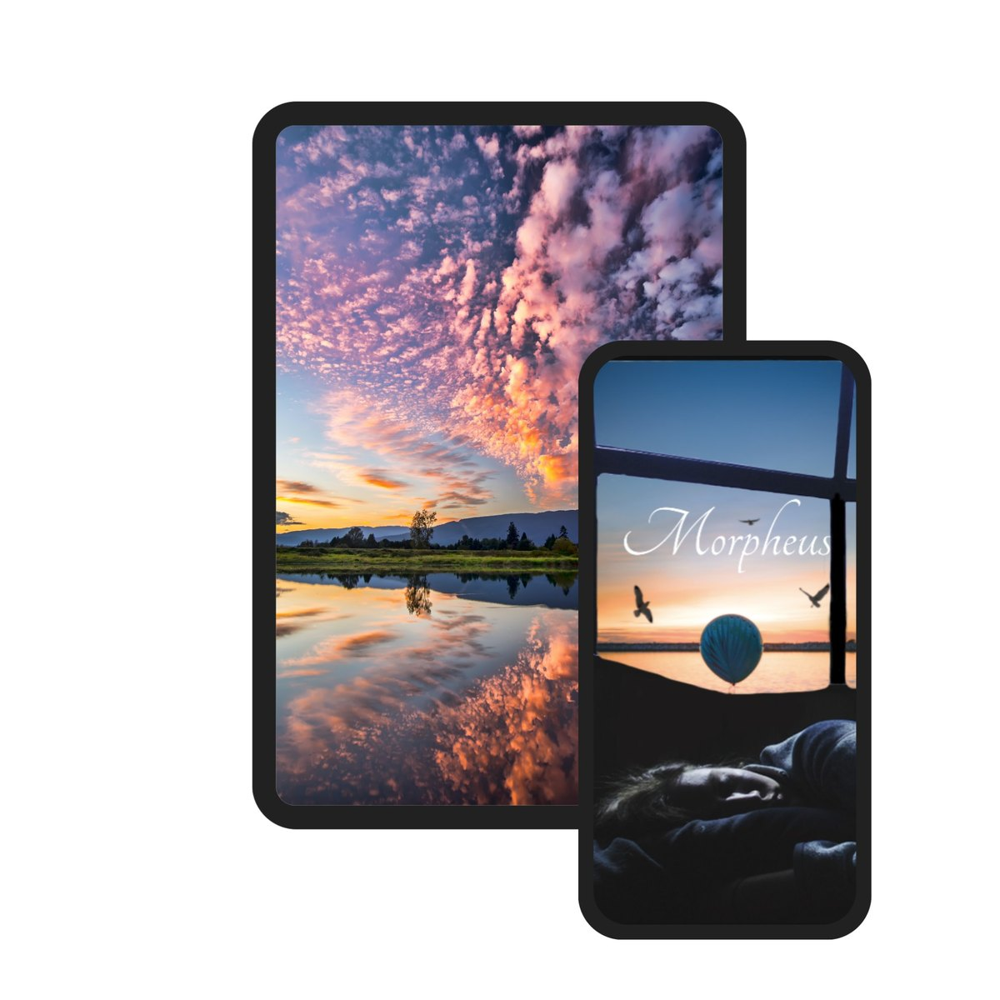
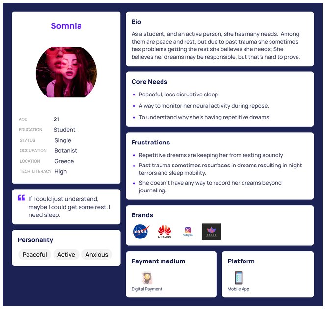
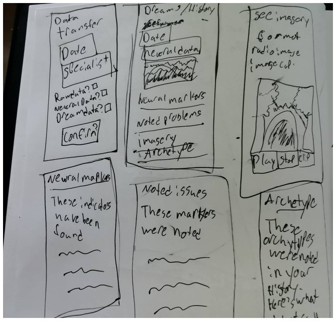
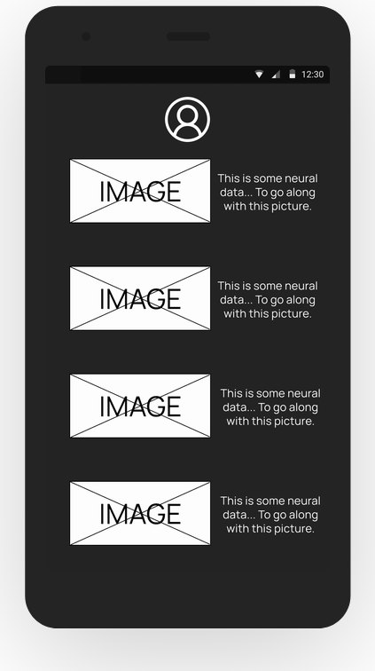

Morpheus: Pleasant Dreams
Morpheus is a centralized platform to help people who have disruptive sleep patterns, often due to trauma. Its non-invasive neural scanning translates neural data into easily viewable material that can be shared with a sleep specialist.
- Role
- UX designer: visual design, UX research, analysis, information architecture, prototyping, interaction, and usability testing
- Project
- UX/UI bootcamp project
- Tools
- Figma, Maze

Why Morpheus
We often think about what would be impactful, and what people need, but we also enjoy giving focus to what could move technology forward. Enter Morpheus.
The problem
People don't always get the rest they feel they need. Occasionally the cause can be linked to trauma, but not everyone can remember their dreams regularly.
Neural scanning isn't available to the common person, and neither is the ability to read that data. Translating the data into something easily readable, with the ability to send it to a professional, would be welcomed.
Who it's for
Morpheus is for people who suffer from sleep maladies such as sleep paralysis, sleep mobility, and night terrors, as well as those with PTSD. It's also for anyone interested in their sleep activity and revisiting their dreams.
Surveys
After we launched the MVP, we wanted to gather feedback from the existing users, so we set up an online survey and asked them to fill it out.
We received 42 responses from varying walks of life, who sometimes gave surprising answers. All of them helped shape the end product.
We also sent requests for interviews to the American Psychological Association and the American Sleep Association, but they didn't respond.
42 survey responders who said they dream and remember their dreams with a certain frequency
- Dream in color
- 95%
- Hear music in their dreams
- 90%
- Have experienced déjà vu
- 95%
Main commonalities
- Have trouble remembering their dreams
- 67%
- Have repetitive dreams
- 69%
Personas
Based on the interviews and workshop, we set up personas and referred to them throughout the entire product development process, especially toward the end of the design, to make sure we were hitting our target areas.
We built this persona from the data gathered in our research, surveys, and interviews. Along with user testing, it helped us make corrections to the end product. We really wanted to convey the type of person Somnia is: her core needs, her pain points, and so forth.
Eventually this persona became part of a slide deck used to showcase the project.

Sketches
This sketch helped iron out a look for what the app needed and a baseline for the UI. The needs for Morpheus were turning out to be demanding, so they had to be well planned before they could be well executed.
Early sketches like this, while maybe not pretty, were valued seeds that grew into what the app would become.
Survey data showed us the features that were needed and the types of users who would be interested in the project. That information was integral not only to the wireframes, but to the project at large.

Empathy map

SWOT analysis
![SWOT analysis under a logo of a wave and the letter N. Strengths: easily accessible and navigable, non-invasive, records neural data, easily shares information with a sleep specialist. Weakness: somewhat speculative, technology is still new, may be expensive in the beginning, will be considered niche. Opportunities: could appeal to a broader market, could work with other mediums, additional technology could supercharge the app, app use on the rise. Threat: have the jump, larger financial backing, FDA approval.](../assets/Images/Morpheus/morpheus-swot.jpg)
Wireframes
At the beginning of my design process, I created wireframes in Figma for testing.
I made both low-fidelity and high-fidelity wireframes, and lo-fi can really help flesh out initial ideas and show how those ideas work together. Both were used for user testing, because if the flow isn't clear in lo-fi, it's going to be a mess at higher fidelity, especially on a project of this scale.

UI design
Once we tested out all usability mistakes, we started designing the final screens in Figma.
We tend to follow a darker visual style, but since the concept was sleep and dreams, we wanted lighter variations. We also established two themes, one light and one dark, and we're very proud of both for their aesthetics and their accessibility.
Interactive prototype
User testing
Before launching the product, we ran a testing round to reveal possible usability problems.
We used Maze with certain former users who had expressed interest in being contacted again. They remotely tested the user flow so we could make sure the design had the greatest ease we could offer.
We found that although the project had excellent flow, some participants were confused by label choices and didn't enjoy the initial color choices. We fixed both. Afterward, participants confirmed they had little to no trouble reaching what they wanted from any part of the app.
What I learned
Even when trouble arose (some of the slides decided to just "die" and refused to be used in prototyping, and had to be reforged because duplicating them only replicated the issue), I was able to figure out the problem and bounce back quickly.
We also learned that a larger, more complicated project wasn't an issue.
One of our largest trepidations was whether others would be interested in the app, or would think it was just grandeur or uninteresting. We got the exact opposite response. Almost everyone who was shown the app or interacted with the prototype expressed enthusiastic interest in the project and its possible applications.
“Oh My Goodness! WOW. This is sooooooo cool! I love how you have it organized and all the information that is at my fingertips. And you didn't cut any corners. Awesome! Pure Awesome!”